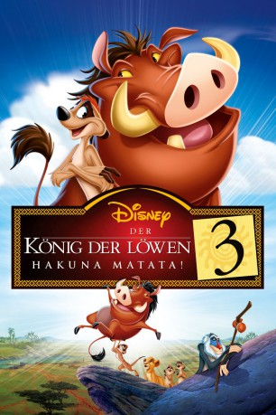

#497 Der König der Löwen 3 - Hakuna Matata
Alternativ: The Lion King 1 1/2 (Englischer Titel)
 
 IMDB-Wertung: 6.6 / 10
IMDB-Wertung: 6.6 / 10  Metascore: 0
Metascore: 0 
Timon und Pumbaa sehen sich den Beginn ihrer Freundschaft als Film an und lassen ihre Vergangenheit Revue passieren: Wie Timon als Loser der Meerkatzengemeinschaft nach diversen von ihm verursachten Katastrophen in die weite Welt auszieht, wie er buchstäblich mit dem einsamen Warzenschwein Pumbaa zusammenstößt und die beiden vor Schreck erst mal losbrüllen und wie sie den König der Löwen kennen lernen. Besonders spannende und amüsante Episoden werden von den beiden nach Herzenslust kommentiert.
Jahr: 2004
Dauer: 77 Minuten
FSK:
Land: Australien Studio: ABCTonspuren:
Untertitel:
Auflösung: 1080p (1920x1080) Größe: 2641 MB
Genre: Animation/Trick, Abenteuer, Komödie, Familie, Musical
Regisseur: Bradley Raymond
Drehbuch: Tom Rogers, Roger Allers, Irene Mecchi, Bill Steinkellner, Evan Spiliotopoulos
Soundtrack: Don Harper
Darsteller:
Datei: X:\Kinder Disney HD\König der Löwen\König der Löwen 3 - Hakuna Matata, Der (2004, FSK, 1920x1080).mkv seit 02.03.2015
Festplatte: Kinder-Filme+Trick
 Es gibt insgesamt 10 Filme in der Gruppe 'Kinder Disney HD\König der Löwen'
Es gibt insgesamt 10 Filme in der Gruppe 'Kinder Disney HD\König der Löwen'